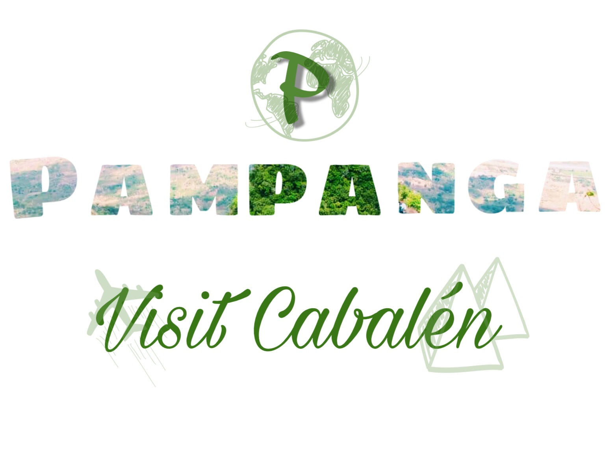

Holy Friday
Crucifixion, flagellation in San Fernando, Pampanga. San Juan is one of at least three villages in the city of San Fernando, Pampanga that hold daylong passion plays every Good Friday depicting the sufferings of Jesus Christ. The other two are San Jose and Sta
Located at: San Fernando Pampanga
Giant Lantern Festival
The Giant Lantern Festival (Kapampangan: Ligligan Parul) is an annual festival held in December (Saturday before Christmas Eve) in the City of San Fernando in the Philippines. The festival features a competition of giant lanterns.
Located at: San Fernando Pampanga
Hot Air Balloon Festival

The Giant Lantern Festival (Kapampangan: Ligligan Parul) is an annual festival held in December (Saturday before Christmas Eve) in the City of San Fernando in the Philippines. The festival features a competition of giant lanterns.
Located at: Lubao Pampanga
Footer
Disclaimer
No copyright infringement is intended.
some assests/pictures and contents are copy paste in the internet and not owned by
the developer/s unless otherwise intended; the credit goes to the owner
This Website is for Educational Purposes only and not for profit.
Thankyou for your cooperation
Social Media
www.facebook.com/sianraquel
www.instagram.com/sianraquels
www.github.com/sianraquels
About Me
Raquel Santos Sian
Graduate of Computer Engineering April 2018
Tuitt Coding Bootcamp Graduate June 2018
Contact Me: 09263836233
Address: Rexhandicraft Mac-Arthur Hi-way Del Pilar San Fernando Pampanga